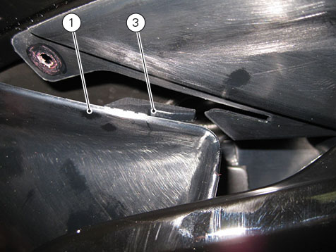
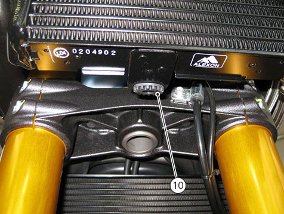
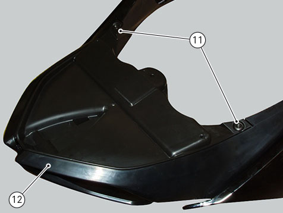
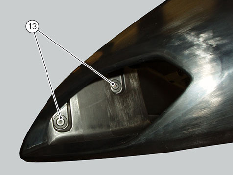
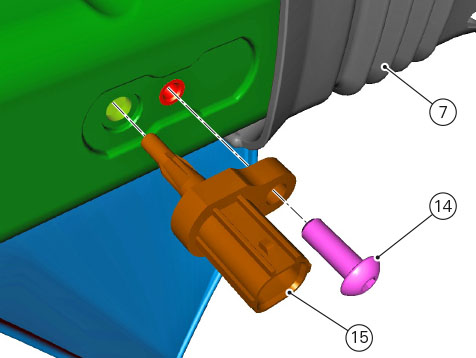

Removing the front half-fairing
Remove the air deflector (1) by loosening screws (2) and collecting the nylon washer and release tab (3) from the slot on front half-fairing.
Perform the same procedure to remove the air deflector (4).

Loosen screws (5) securing front half-fairing side and collect the nylon washers, loosen screws (6).
Disconnect hose (7) from airbox resonator and air temperature sensor connector (8).
Remove the front half-fairing by disengaging pin (9) from the rubber block on oil cooler (C).

Disassembling the fairings
If necessary, disassemble the fairings.
Loosen the screws (11) and remove the lower half-fairing (12) from the front half-fairing assembly.

Loosen screws (13) and separate the front half-fairing RH panel from the LH one.

Slide out hose (7) and loosen screw (14) to remove the pressure sensor (15).
